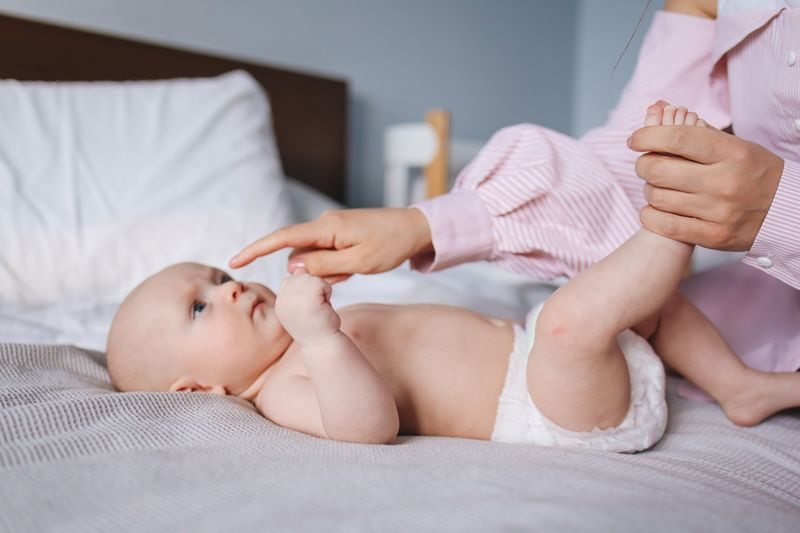
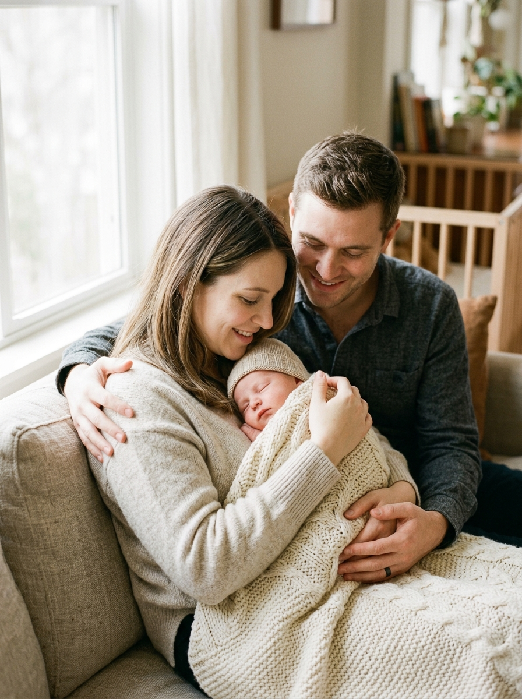
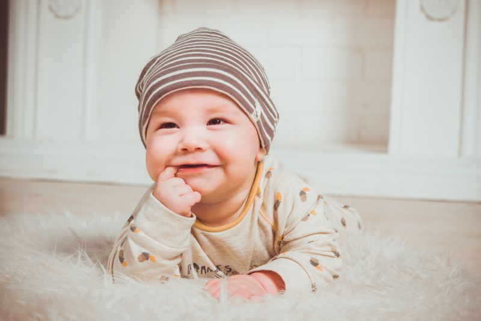

Newborn sessions are intentionally gentle and unhurried. We allow plenty of time for feeding, soothing, and settling so parents never feel rushed and babies remain comfortable throughout the session.
Our studio styling uses neutral tones, organic textures, and simple posing so the final gallery feels timeless. Parent and sibling portraits are woven into the session to create a complete story of this early season, not just posed baby images.
Our safety-first approach
- Warm, calm studio setup with flexible pacing
- Baby-led posing with comfort as the priority
- Clean wraps, blankets, and sanitized props
- Family and sibling portraits included on request
- Guidance for feeding, timing, and what to bring


When to book
The ideal time to reserve is during the second trimester so we can hold space around your due date. Most posed newborn sessions take place within the first two weeks after birth, while lifestyle sessions can be scheduled a little later if preferred.